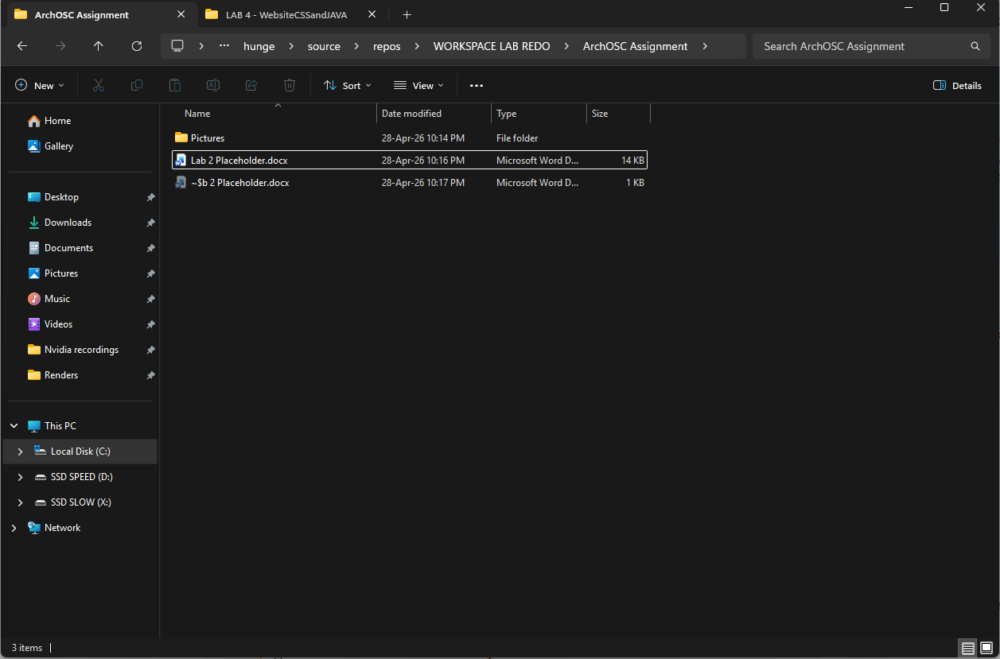
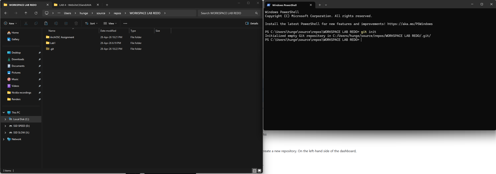
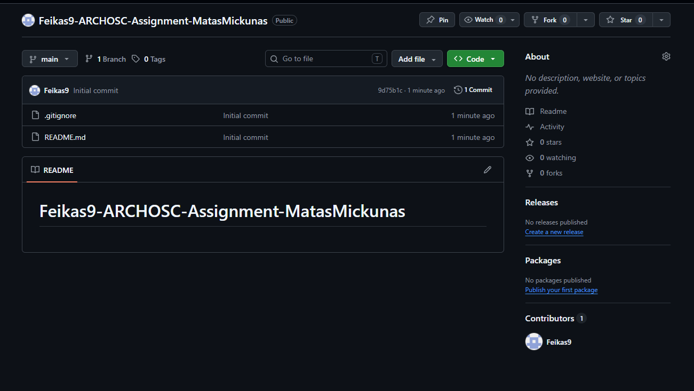
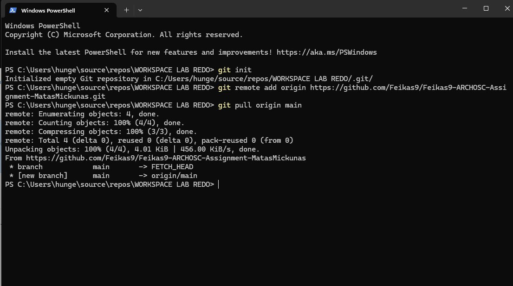
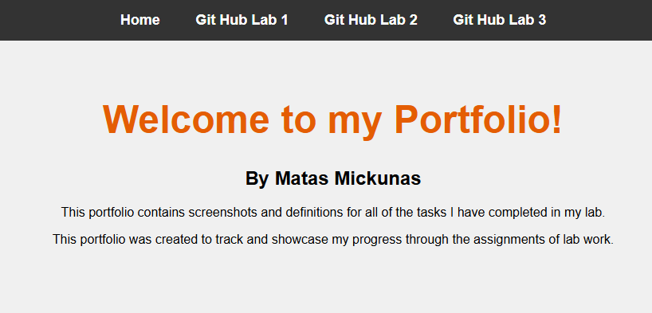
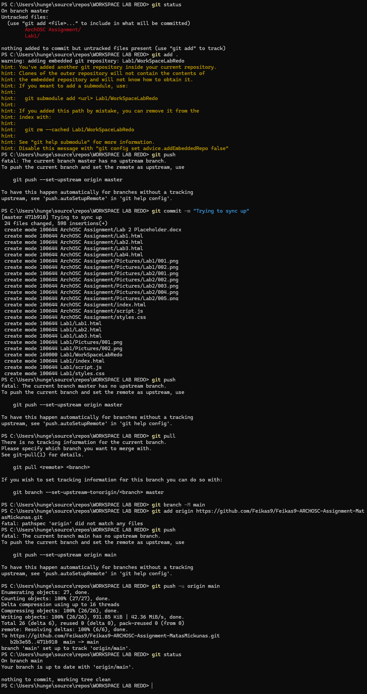
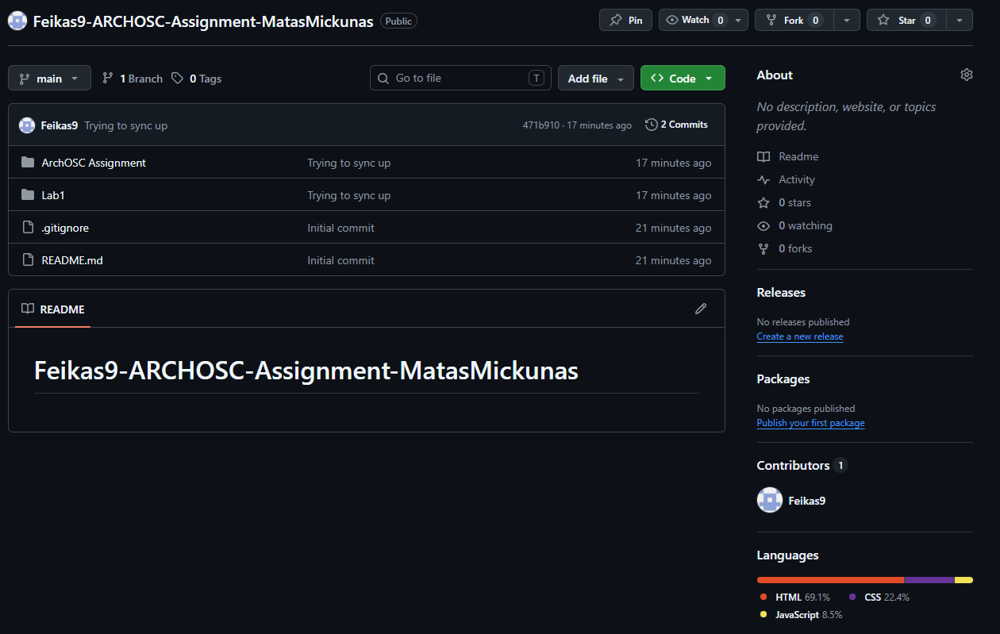
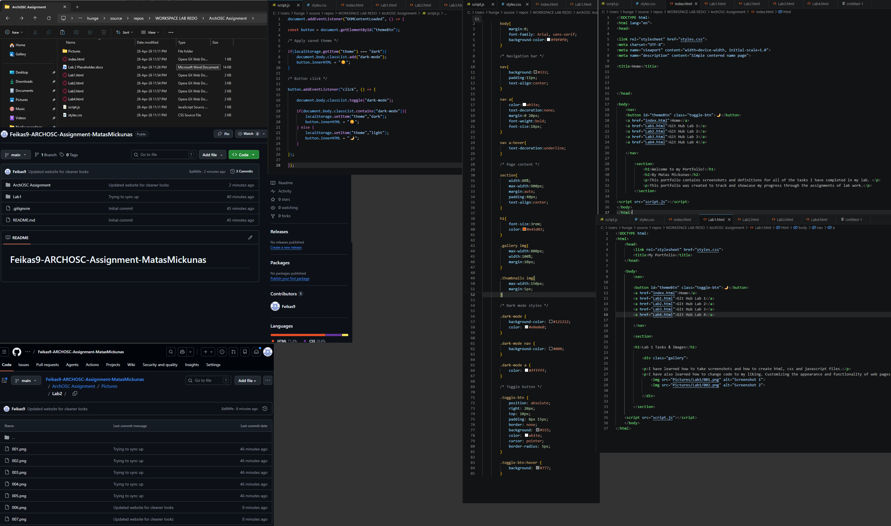

Task 1
So far, I have created a local repository for lab2 and some folders for easier archiving of
files. I have also created a word document to keep track of the steps that I have taken.

Task 2
I have followed the steps and used “git init” command to create a new git repository.

Task 3
I have created a git hub repository. It will be used to sync up my local data with online
one for the assignment.

Task 4
I have created a “bridge” between GitHub and my local machine! I have also pulled files from GitHub to my local machine.

Task 5
I have created a base for my portfolio website.

Task 6
I have tried to sync up from local as instructed however I ran into some errors and had to find a work around as shown in 006 png.

Task 7
I have pushed the files in task 6… but did it again in task 7… bit confusing information given in the instructions…

Task 8
I have improved my website to begin with since i have restarted this task half way through meaning i reused some code from previous attempts.
Bassically, all i have done is add multiple sites and buttons to navigate through them. I have also added a dark mode that stays ON on all pages. And I have set everything up so that I can add infinite websites using script and style as reference without needing to recreate the entire structure.
You can click the image below to zoom in!
